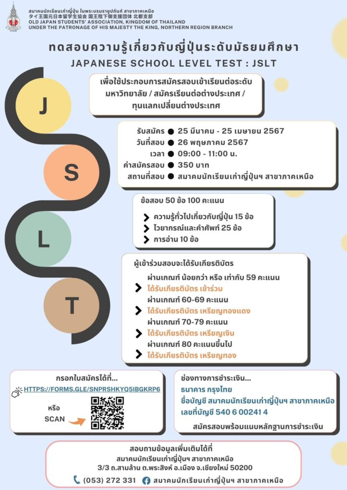

เปิดรับสมัครการทดสอบความรู้เกี่ยวกับญี่ปุ่นระดับมัธยมศึกษา (JAPANESE SCHOOL LEVEL TEST : JSLT) ครั้งที่ 1 ประจำปี 2567
เนื้อหาตามประกาศ ณ วันที่เผยแพร่ โปรดตรวจสอบกำหนดการและเงื่อนไขก่อนดำเนินการ


[ประชาสัมพันธ์] เปิดรับสมัครการทดสอบความรู้เกี่ยวกับญี่ปุ่นระดับมัธยมศึกษา (JAPANESE SCHOOL LEVEL TEST : JSLT) ครั้งที่ 1 ประจำปี 2567
รับสมัคร : 25 มีนาคม – 25 เมษายน 2567
ลิงค์รับสมัคร : https://forms.gle/snPrShKYq5ibgkrp6
สถานที่สอบ : สมาคมนักเรียนเก่าญี่ปุ่น ในพระบรมราชูปถัมภ์ สาขาภาคเหนือ
วันสอบ : วันอาทิตย์ที่ 26 พฤษภาคม 2567
ค่าสมัคร : 350 บาท
โอนเงิน : ธนาคารกรุงไทย สาขาประตูเชียงใหม่
เลขที่บัญชี : 540-6-00241-4
ชื่อบัญชี : สมาคมนักเรียนเก่าญี่ปุ่น ในพระบรมราชูปถัมภ์ สาขาภาคเหนือ
เพื่อสนับสนุนและส่งเสริมให้ผู้เรียนภาษาญี่ปุ่นได้มีโอกาสทดสอบความรู้ ความสามารถของตนเอง อีกทั้งยังได้รับเกียรติบัตร เพื่อใช้ประกอบการสมัครสอบเข้าเรียนต่อระดับมหาวิทยาลัย สมัครเรียนต่อต่างประเทศ และทุนแลกเปลี่ยนต่างประเทศ
ติดต่อสอบถาม : สมาคมนักเรียนเก่าญี่ปุ่นฯ ภาคเหนือ (ตรงข้ามวัดพระสิงห์)
โทร. 053-272-331
ติดตามข่าวสารของสมาคมนักเรียนเก่าญี่ปุ่นฯ สาขาภาคเหนือได้ที่
เฟซบุ๊คเพจ : https://www.facebook.com/ojsatn/ และ
เว็บไซต์ : www.ojsatn.or.th